Electrical Properties
Energy bands and the classification of solids, conduction in metals and its resistivity, non-metallic conductors, intrinsic and extrinsic semiconductors and their applications, and insulating, dielectric, ferroelectric and piezoelectric materials.
Central idea: the electrical behaviour of a solid is decided by how its electrons fill the energy bands that the atoms form when they come together. A half-filled (or overlapping) band gives a conductor; a full valence band separated by a small gap $E_g$ from an empty conduction band gives a semiconductor; a large gap gives an insulator. In every case the conductivity is carriers times charge times mobility, $\sigma = n\,\lvert q\rvert\,\mu$, and the whole topic is about what controls $n$ (temperature, doping, band gap) and $\mu$ (collisions with vibrations, impurities and defects). Insulators that can be polarised (dielectrics, ferroelectrics, piezoelectrics) close the unit.
This page follows the single official session of Topic 6 (Session 13) slide by slide. Slide 1 is the title and agenda (band structure and electrical properties; conducting materials, metallic and non-metallic; semiconducting materials, intrinsic and extrinsic of types n and p; insulating and dielectric materials). Slides 9, 24 and 50 repeat this agenda as section dividers. Every section names the slides it comes from. Figures that appear on the slides are copied from them as PNG crops, and each caption names its slide. The few drawings that have no figure on the slides (the conductivity scale built from the table of Slide 5, the bar of Ohm's law, the band-gap trends and the cubic BaTiO3 cell) are drawn for this page, and their captions say so. The questions printed on the slides (Q1 to Q5 and Q10) are problems 1 to 5 and 10 of the official sheet, and they are solved on the problems page of this topic.
§ 1 Learning objectives and classification of materials [Session 13 Slides 2, 5]
The slides set three objectives [Session 13 Slide 2]:
- Know the classification of the materials according to their electrical and magnetic properties.
- Understand how the structure and composition of a material determine its response to an electric field and to a magnetic field.
- Understand the influence of the temperature on the electrical and magnetic properties.
Materials are classified by their electrical conductivity $\sigma$, measured in $(\Omega\cdot\text{m})^{-1}$ [Session 13 Slide 5]:
| Class | Conductivity $\sigma$ in $(\Omega\cdot\text{m})^{-1}$ | Example |
|---|---|---|
| Insulators | $10^{-20}$ to $10^{-10}$ | Polyethylene (PVC coating on the slide) |
| Semiconductors | $10^{-6}$ to $10^{4}$ | Si, Ge (microprocessors) |
| Conductors | about $10^{7}$ | Metals (copper wire) |
Counting from the smallest to the largest value of the table, the scale spans about 27 orders of magnitude (the author's count, not printed on the slide).
The reciprocal of the conductivity is the resistivity $\rho = 1/\sigma$, in $\Omega\cdot\text{m}$ [Session 13 Slide 13].
§ 2 Band structures of solids [Session 13 Slides 3-4]
2.1 From atomic levels to bands [Session 13 Slide 3]
An isolated atom has discrete energy levels. When atoms come within close proximity, their orbitals interact and each atomic level splits: two atoms give two levels, a few atoms give a few close levels, and a large number of atoms (a solid) gives so many levels, so close in energy, that they form a continuous energy band. The slide plots the electron energy against the interatomic separation for an aggregate of atoms, with the core-level electrons staying almost unchanged and the outer levels broadening into bands. Between bands a band gap $E_g$ may remain, where no electron states exist.
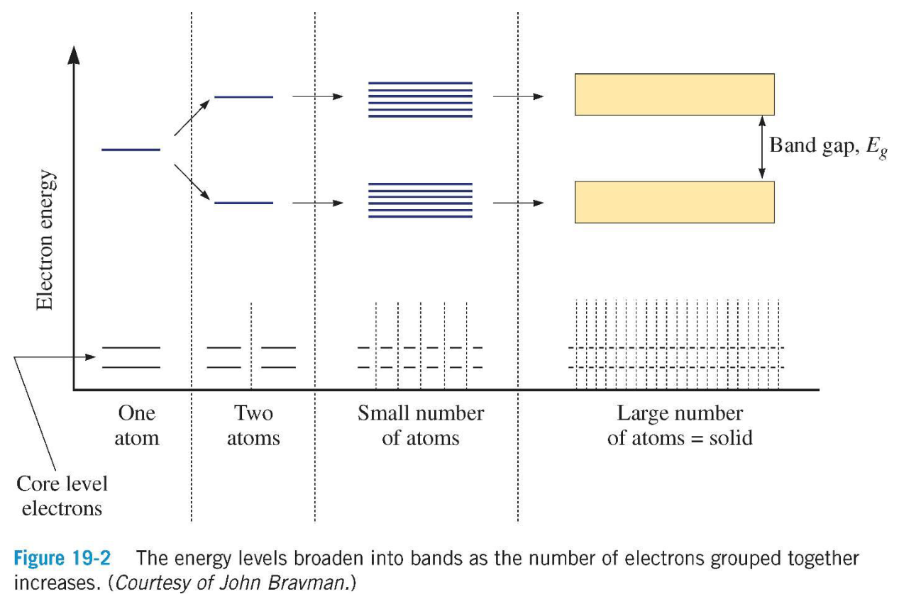
2.2 Valence band, conduction band and gap [Session 13 Slide 4]
The electron energy band structure of a solid is given by its interatomic separation: the bands broaden as the atoms approach and the solid sits at the equilibrium interatomic distance, where the bands have the width and the gap shown in the figure. Two bands matter:
- Valence band: the outermost band occupied with electrons (the valence electrons).
- Conduction band: the band located immediately above the valence band.
- Band gap $E_g$: the energy range between them where there are no states.
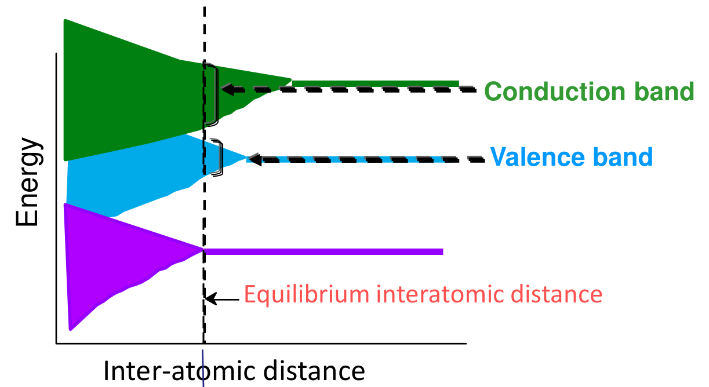
§ 3 Band structure of conductors, semiconductors and insulators [Session 13 Slides 5-8]
3.1 Conductors [Session 13 Slides 6-7]
A material conducts when electrons can find empty states just above the filled ones, so that a small excitation (an electric field) lets them move. There are two ways [Session 13 Slide 6]:
- A1) Half-filled valence band. There is only one $s$ electron per atom (Na, Cu, Al in the slide's caption), so the valence band is half filled: filled states below the Fermi energy $E_f$ and empty states above it in the same band.
- A2) Overlapping bands. In Mg the filled $3s$ band overlaps the empty $3p$ band, so the two bands together are only partly filled.
The slide lists the electron configurations used to decide this:
| Element | Atomic number | Configuration |
|---|---|---|
| Mg | 12 | $1s^2\,2s^2\,2p^6\,3s^2$ |
| Al | 13 | $1s^2\,2s^2\,2p^6\,3s^2\,3p^1$ |
| Cu | 29 | $1s^2\,2s^2\,2p^6\,3s^2\,3p^6\,3d^{10}\,4s^1$ |
The slide's table gives aluminium as $3s^2\,3p^1$ (one electron in the $3p$ level), while its caption says that Na, Cu and Al have a half-filled band "since there is only one $s$ electron". The table is kept as printed; Na is not in the table.
For a metal, the occupancy of the electron states changes by an electron excitation as in the figure: before the excitation the states are filled up to $E_f$, and after it an electron has been promoted to an empty state just above $E_f$ [Session 13 Slide 7].
3.2 Semiconductors and insulators [Session 13 Slide 8]
- In a semiconductor the filled valence band is separated from the empty conduction band by a relatively narrow gap, $E_g < 2$ eV (pure silicon: $E_g = 1.1$ eV; pure germanium: $E_g = 0.67$ eV).
- In an insulator the gap is relatively large, $E_g > 2$ eV (pure diamond: $E_g = 6$ to $7$ eV).
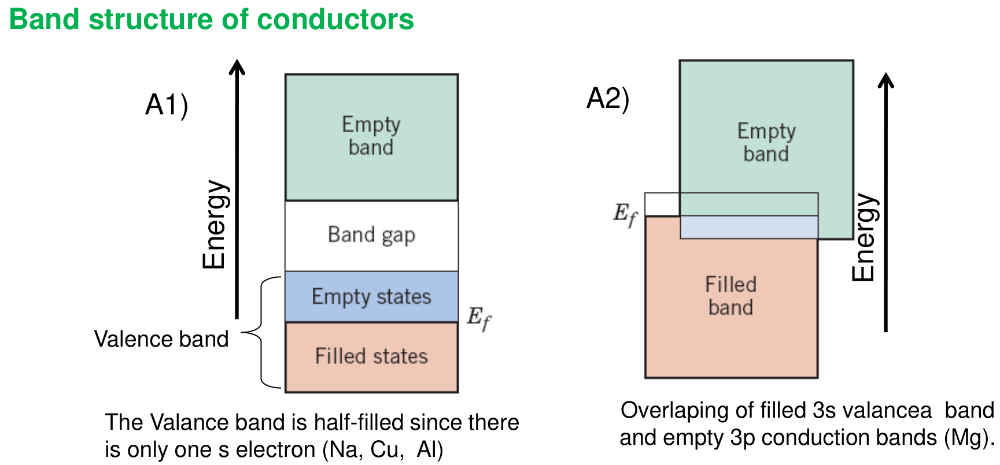
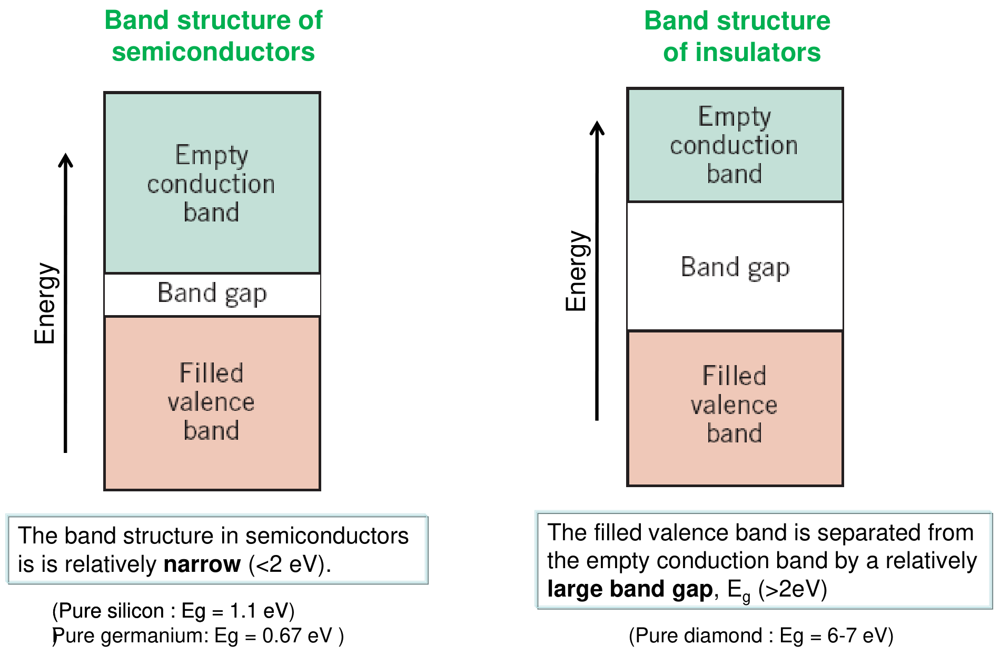
§ 4 Metallic conductors: Ohm's law and the free-electron model [Session 13 Slides 10-13]
4.1 Electrical and ionic conduction [Session 13 Slide 10]
The macroscopic law is Ohm's law, $I = V/R$, with $I$ the electric current (A), $V$ the potential difference (V) and $R$ the resistance ($\Omega$). The charge can be carried in two ways: by ionic conductivity (aqueous electrolytes, some ceramics) or by electrical (electronic) conductivity (metals). In a conductive metal there is a cloud of electrons around the nuclei (the positive ions).
For a bar of length $l$ and cross-section $A$ the microscopic form is $\mathbf J = \sigma\mathbf E$. Writing $E = V/l$ and $J = I/A$ in it gives $V = (l/\sigma A)\,I$, so $R = \rho\,l/A$ (derived here: the slide only writes $I = V/R$; this is the link with the geometry of the specimens of the sheet).
4.2 Acceleration of the electrons [Session 13 Slide 10]
When a uniform electric field $E$ is applied, the electrons accelerate. Newton's second law for one electron of charge $q_e$ ($1.6\times10^{-19}$ C) and mass $m_e$ ($9.109\times10^{-31}$ kg) is
The slides write the field $E$ in V/m² (and in A/m² on Slide 12). The field strength is in V/m (volt per metre); the units printed are typographical slips and V/m is used here.
4.3 Collisions, drift velocity and mobility [Session 13 Slide 11]
If the electrons only accelerated, the current would grow without limit. For a given $E$ the current $I$ is constant, so the speed of the electrons is constant: there are "friction forces", due to collisions with the ions, that counteract the acceleration. This is the origin of the resistivity. Between collisions the drift velocity grows linearly with time; at each collision it falls back (sawtooth of the figure), so the average drift velocity $v_d$ is the average speed of the electrons in the direction of the force generated by the field:
$\tau$ is the relaxation time (the mean time between collisions) and $\mu$ is the electron mobility, in m²/(V·s).
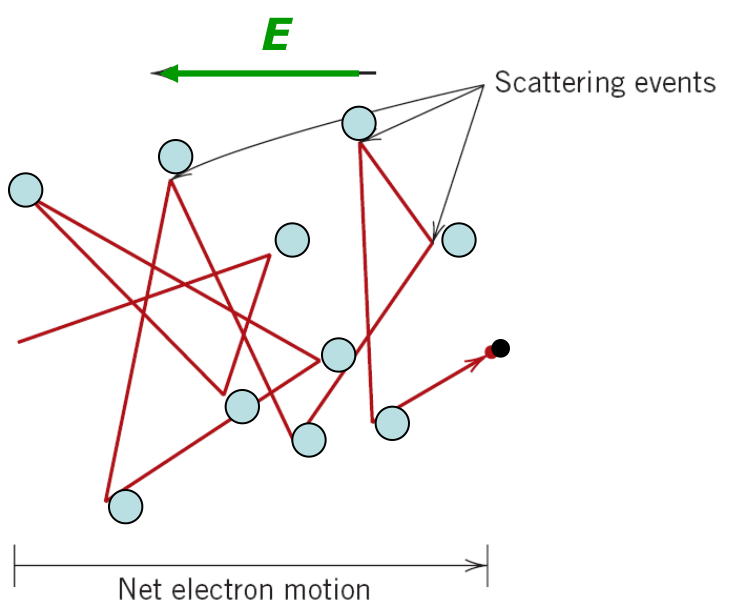
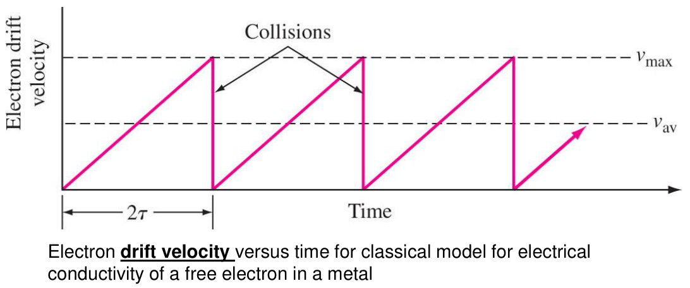
4.4 Current density, conductivity and resistivity [Session 13 Slides 12-13]
For a material with $n$ free conducting electrons per unit volume, the current density is the charge that crosses a unit area per second:
In metals the carriers are the non-bonded electrons, so the conductivity depends on the number of electrons per unit volume and on their mobility. The resistivity is $\rho = 1/\sigma$, in $\Omega\cdot\text{m}$. The slide adds that the resistivity grows with the disorder in the metal structure and with the number of collisions between the non-bonded electrons and the metallic ions [Session 13 Slide 13].
§ 5 Electrical resistivity of metals [Session 13 Slides 14-15]
5.1 Matthiessen's rule [Session 13 Slide 14]
The total resistivity of a metal is the sum of a thermal part and a residual part:
$\rho_T$ is the thermal resistivity, produced by the vibrations of the lattice, and $\rho_r$ is the residual resistivity, produced by impurities and defects (next section). The slide's plot of resistivity against temperature shows $\rho_r$ as a constant floor (the curve tends to it at low temperature) and $\rho_T$ as the temperature component added on top.
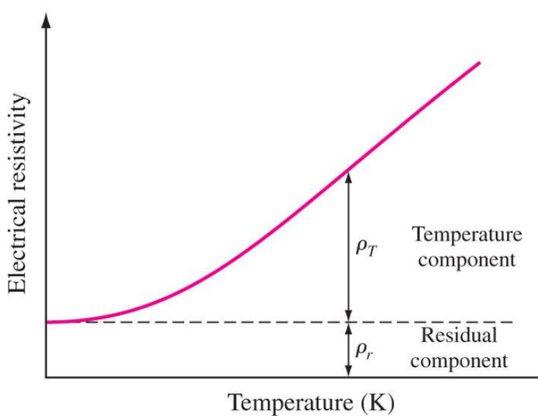
5.2 Thermal resistivity [Session 13 Slide 14]
The thermal resistivity grows linearly with the temperature:
$\rho_0$ is the resistivity at 0 °C (in $\Omega\cdot\text{m}$) and $\alpha_T$ is the temperature coefficient of resistivity (in ${}^{\circ}\text{C}^{-1}$). Because $\rho_0$ is the value at 0 °C, $\Delta T$ is the temperature in degrees Celsius. The slide's table:
| Metal | Resistivity at 0 °C in $\mu\Omega\cdot\text{cm}$ | $\alpha_T$ in ${}^{\circ}\text{C}^{-1}$ |
|---|---|---|
| Aluminium | 2.7 | 0.0039 |
| Copper | 1.6 | 0.0039 |
| Gold | 2.3 | 0.0034 |
| Iron | 9 | 0.0045 |
| Silver | 1.47 | 0.0038 |
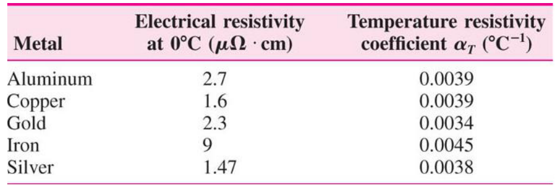
The second chart of the slide shows the effect of temperature on the resistivity of selected metals (Fe, Rb, Os, Co, Na, Ir, Rh, Mg, Au, Cu, Ag): almost straight lines above about −100 °C.
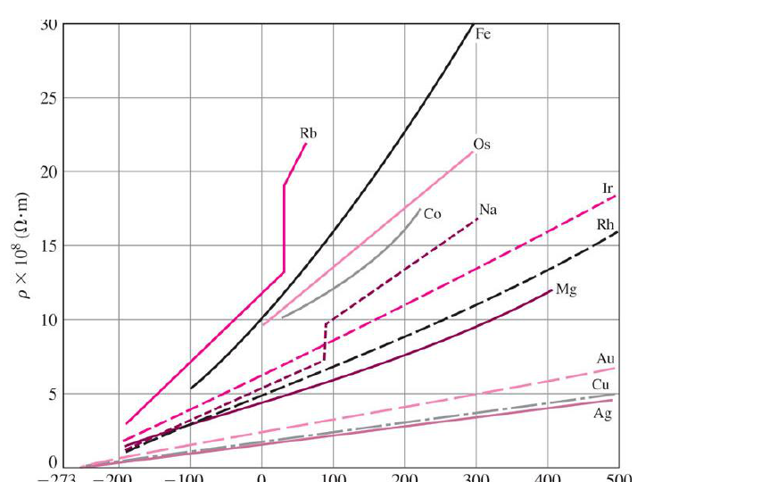
5.3 Question 1: equal resistivity of silver and aluminium [Session 13 Slide 15]
Q1 asks at which temperature a silver wire has the same resistivity as an aluminium wire at 45 °C, with $\rho_0 = 1.47\times10^{-6}$ and $2.70\times10^{-6}\ \Omega\cdot\text{cm}$ and $\alpha_T = 0.0038$ and $0.0039\,{}^{\circ}\text{C}^{-1}$ for silver and aluminium. The slide first evaluates the aluminium resistivity with the law above, $\rho_{Al,45} = 2.7\times10^{-6}(1 + 0.0039\cdot45) = 3.173\times10^{-6}\ \Omega\cdot\text{cm}$, and then solves the law for the temperature of silver, $T = (\rho_T - \rho_{0,Ag})/(\rho_{0,Ag}\,\alpha_{T,Ag}) = 304.86\,{}^{\circ}\text{C}$. This is problem 1 of the sheet, and its page redoes the calculation with the units in SI and the unrounded intermediate value (the key of the sheet is 305 °C).
§ 6 Residual resistivity: impurities and defects [Session 13 Slides 16-17]
The residual resistivity $\rho_r$ does not depend on temperature. It depends on [Session 13 Slide 16]:
- the concentration and type of impurities or alloying elements (impurity resistivity $\rho_i$), and
- the structural imperfections (deformation resistivity $\rho_d$): dislocations, grain boundaries and similar.
So $\rho_r = \rho_i + \rho_d$ and, with Matthiessen's rule, $\rho_{total} = \rho_T + \rho_i + \rho_d$. $\rho_r$ increases with the degree of distortion of the metal lattice: a foreign atom, a large one or a small one, disturbs the periodicity around it. The slide's chart shows how small additions of various elements raise the room-temperature resistivity of copper: for each element the resistivity grows linearly with the weight percent of impurity, with a slope that depends on the element (the steepest are P, Fe, Si and As; Ni, Pb and Ag are the gentlest among those plotted).
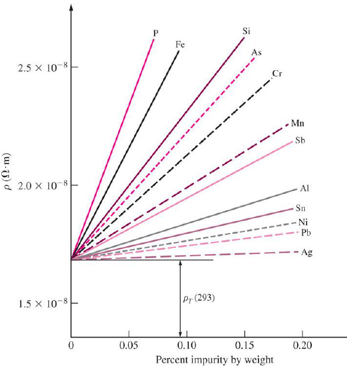
6.1 Scattering of the electrons [Session 13 Slide 17]
A conduction electron moves through a perfect crystal without scattering. In a crystal heated to a high temperature the atoms vibrate and displace from their sites, and in a crystal containing atomic-level defects (foreign atoms, vacancies, dislocations) the periodicity is broken too. In both cases the electron is scattered, which reduces its mobility and therefore the conductivity. The chart of the slide shows copper with different nickel contents and deformed copper: the curves are parallel, separated by the constant residual terms $\rho_i$ and $\rho_d$, while the temperature component $\rho_T$ is the same.
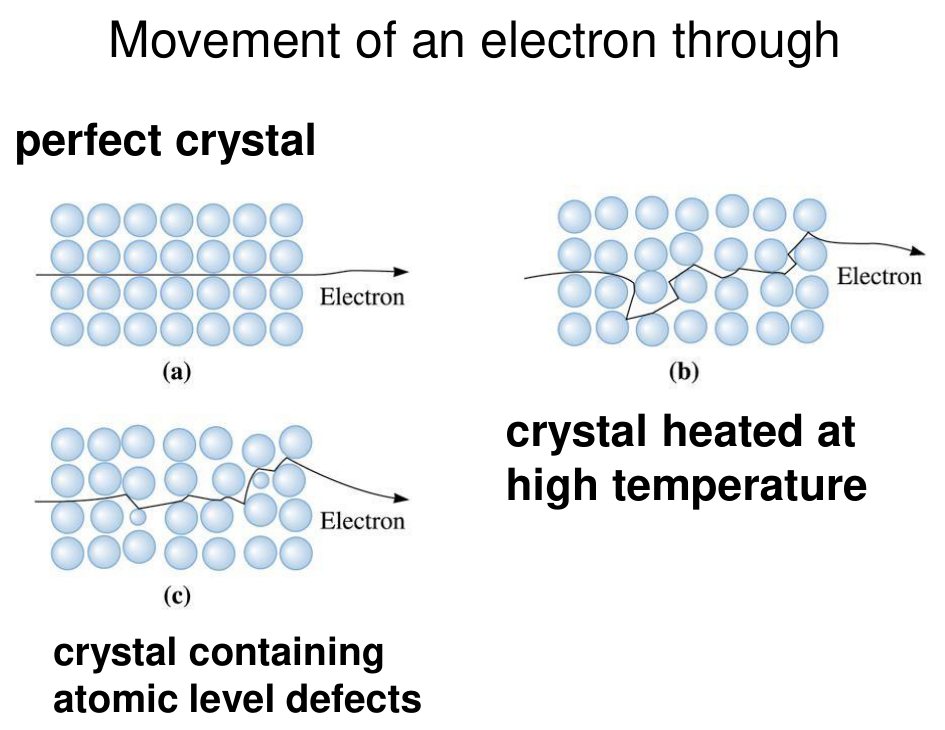
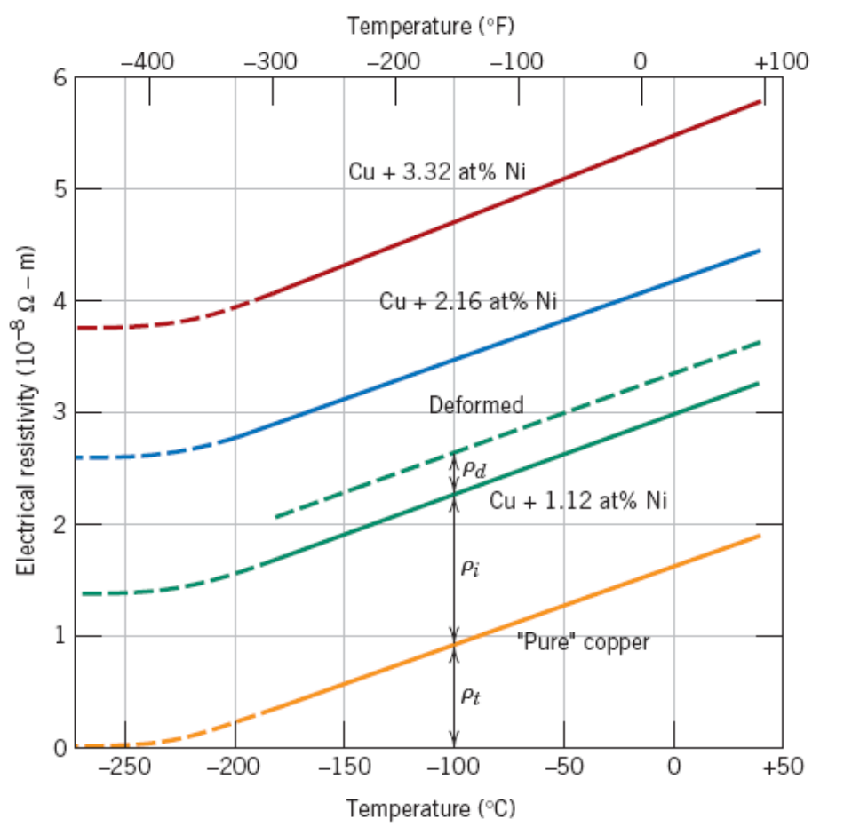
§ 7 Mechanical properties and resistivity [Session 13 Slides 18-19]
All hardening methods cause, to a greater or lesser extent, a decrease of the conductivity, [Session 13 Slide 18]. The reason, in the author's reading (not printed on the slide), is that every hardening method of Topic 5 works by putting obstacles in the way of the dislocations, and the same obstacles scatter the electrons. The slide plots yield strength and conductivity against the percent of cold work and against the percent of zinc (a solid solution):
- Cold work: the yield strength rises strongly, while the conductivity falls only slightly (the chart compares with the zinc case, where it falls much more).
- Zinc in solution: the yield strength rises moderately but the conductivity falls sharply.
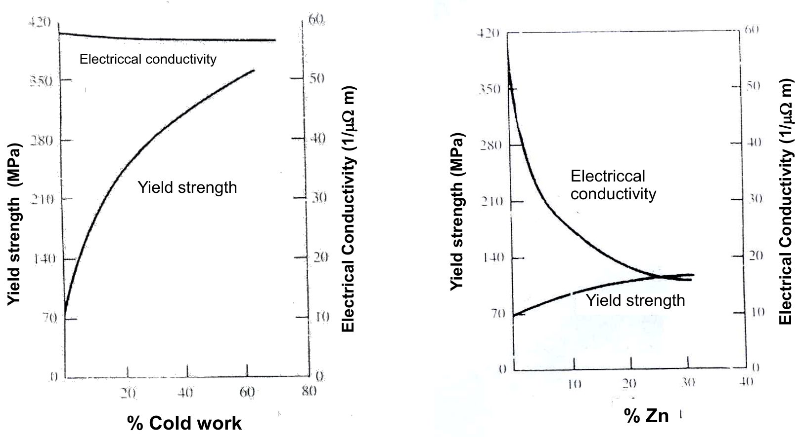
Q2 on Slide 19 asks what happens to the conductivity and the tensile strength of an aluminium alloy wire when it is alloyed with copper, when its working temperature is lowered, when its grain size is increased, when intermetallic precipitates are formed and when it is cold worked, and which strategy gives the lightest wire with the same strength and conductivity. It is problem 2 of the sheet.
§ 8 Non-metallic conductors [Session 13 Slides 20-23]
8.1 Conductive polymers [Session 13 Slide 20]
A few thermoset polymers, when they are specifically manufactured, can become conductive. Their advantages against metals are flexibility and easy formability. The main mechanism for transmitting the charge is the movement of delocalised electrons: an exchange reaction of electrons between neighbouring redox sites.
8.2 Graphene [Session 13 Slide 21]
Graphene is a single layer of a hexagonal lattice formed by hexagons with an atom at each vertex (graphite is a stack of these layers). It has a huge $\pi$ cloud with delocalised electrons that can move all over the surface at a speed higher than in any other material (about $1000$ km/s). The slide compares
| Material | Conductivity in $(\Omega\cdot\text{m})^{-1}$ |
|---|---|
| Graphene | $0.96\times10^{8}$ |
| Cu | $0.60\times10^{8}$ |
| Si | $4.5\times10^{-4}$ |
The slide writes these values with the symbol $\rho$, but the unit $(\Omega\cdot\text{m})^{-1}$ is the unit of conductivity, so they are $\sigma$.
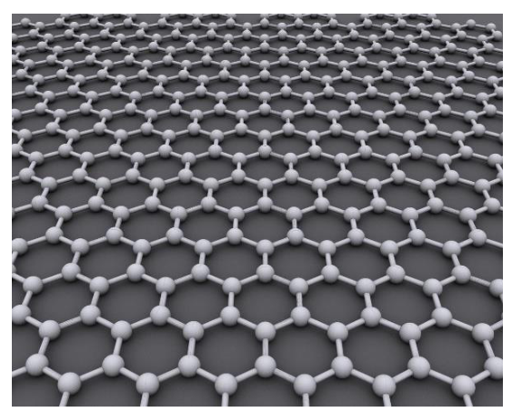
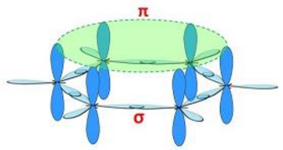
8.3 Conductive ceramics [Session 13 Slide 22]
Ceramics are traditionally insulators, but some advanced ceramics are good electrical conductors. The main mechanism for transmitting the charge is
- Electronic: movement of electrons due to impurities with a different valence, or rare-earth elements. Uses: resistors, electrodes or heating elements.
- Ionic: movement of anions or cations through vacancies or interstitial voids at high temperatures. Uses: gas sensors, fuel cells or batteries. The slide shows two pictures: the movement of ions or, equivalently, the movement of vacancies, and the movement of small interstitial cations ($r_i < r_{atom}$), and a solid oxide fuel cell (anode, electrolyte with oxygen ions, cathode).
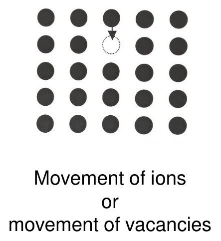
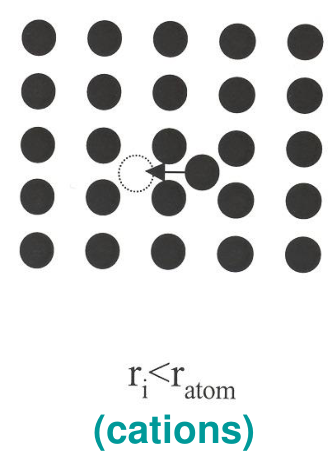
Q3 on Slide 23 compares the effect of vacancies, interstitial cations, interstitial anions, temperature, disorder of the lattice and doping with other valences on an ionic ceramic and on a metal. It is problem 3 of the sheet.
§ 9 Semiconductors: definition and types [Session 13 Slides 25-26]
Semiconductors are materials whose electrical conductivity is approximately midway between the values for good conductors and insulators. In the energy-band model the electronic band structure consists of a full valence band and an empty conduction band, separated by an energy gap $E_g < 2$ eV [Session 13 Slide 25]. The materials are mediocre conductors, but their conductivity is easily controllable, and this became useful in the twentieth century with the manufacture of materials of extremely high chemical and structural purity.
Two types depending on the origin of the carriers [Session 13 Slide 26]:
- Intrinsic semiconductors: the conductivity is determined by the inherent properties of the pure material (elemental silicon and germanium).
- Extrinsic semiconductors: the electrical properties are given by adding dopants with a number of valence electrons different from the solvent. They are generally substitutional solid solutions with low impurity concentrations (100 to 1000 ppm). The extra charge carriers are of two kinds, type n and type p.
§ 10 Intrinsic semiconductors [Session 13 Slides 27-30]
10.1 Excitation and the two kinds of carriers [Session 13 Slides 27-28]
In an intrinsic semiconductor an electric or thermal excitation makes an electron pass from the valence band to the conduction band. This generates a hole in the valence band, and both the free electron and the hole are charge carriers. In the covalent crystal a bonding valence electron cannot move unless it receives enough energy to leave its bonding position; once a critical amount of energy has been supplied, it becomes a free conduction electron and leaves a positively charged hole in the lattice.
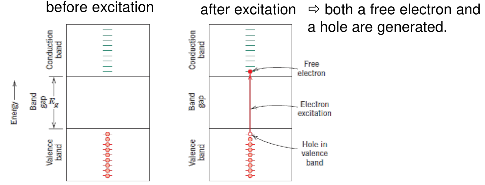
There are two types of carriers: electrons in the conduction band (charge $-1.6\times10^{-19}$ C, density $n_e$) and holes in the valence band (charge $+1.6\times10^{-19}$ C, density $n_H$). The conductivity is the sum of both contributions:
$\mu_e$ and $\mu_H$ are the mobilities of electrons and holes, and $\lvert q_e\rvert$ is the absolute value of the electron or hole charge. In an intrinsic semiconductor $\mu_e > \mu_H$ [Session 13 Slide 33].
10.2 Effect of temperature [Session 13 Slide 29]
For an intrinsic semiconductor both $n$ and $p$ increase with temperature:
$k$ is Boltzmann's constant (the sheet gives $k_B = 8.62\times10^{-5}$ eV/K), $T$ the temperature in kelvin and $E_g$ the band gap; $n_i = n = p$ is the number of excited electrons (and holes) per unit volume. Since $\sigma \propto n_i$,
Plotted as $\ln\sigma$ against $1/T$ the law is a straight line of slope $-E_g/2k$, as the slide's chart shows. Temperature also disorders the crystal and lowers the mobility, but this effect is masked by the increase in the number of carriers [Session 13 Slide 29]. Compare with a metal, where $n$ is fixed and only the mobility changes, so that $\sigma$ falls with temperature.
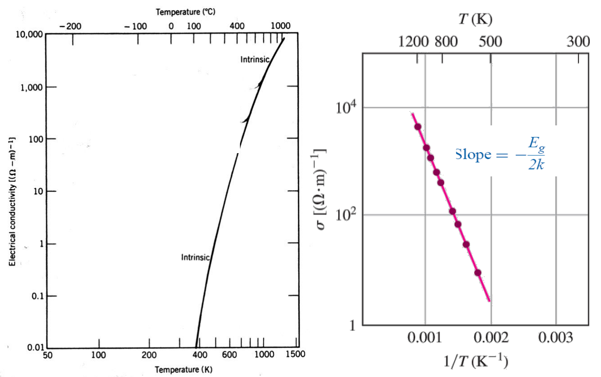
Q4 on Slide 30 asks to justify the different effect of a temperature increase on a metal and on an intrinsic semiconductor. It is problem 4 of the sheet, and problems 7 (germanium at 75 °C) and 8 (carrier concentrations of silicon) apply the formulas of this section.
§ 11 Intrinsic semiconductors: elemental and compound materials [Session 13 Slides 31-34]
11.1 Elemental semiconductors [Session 13 Slide 31]
The elemental semiconductors are the pure elements of group IVA, silicon and germanium, bonded by covalent bonds. As the atom size increases, $E_g$ decreases, and the conductivity of the intrinsic semiconductor increases. The figure of the slide shows the bands of Si and Ge at $0$ K (no electrons in the conduction band, gap printed as $1.09$ eV for Si and $0.72$ eV for Ge) and at $300$ K, when a few electrons have crossed the gap. The data table of the slide:
| Property | Silicon | Germanium |
|---|---|---|
| Energy gap, eV | 1.1 | 0.67 |
| Electron mobility $\mu_n$, m²/(V·s) | 0.135 | 0.39 |
| Hole mobility $\mu_p$, m²/(V·s) | 0.048 | 0.19 |
| Intrinsic carrier density $n_i$, carriers/m³ | $1.5\times10^{16}$ | $2.4\times10^{19}$ |
| Intrinsic resistivity $\rho$, $\Omega\cdot$m | 2300 | 0.46 |
| Density, g/m³ | $2.33\times10^{6}$ | $5.32\times10^{6}$ |
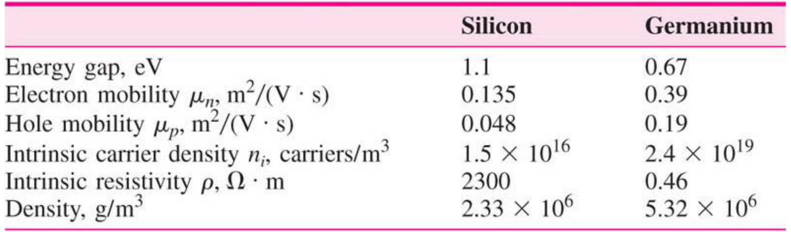
11.2 Compound semiconductors [Session 13 Slides 32-33]
Compounds of elements of groups IIIA and VA (GaAs, InSb) and of groups IIB and VIA (CdS, ZnTe) are also intrinsic semiconductors. Going from the group-14 elemental semiconductors (purely covalent) to the 13-15 and then to the 12-16 compounds, the covalent character decreases and the ionic character increases: $E_g$ increases and, for an intrinsic semiconductor, $\sigma$ decreases. The slide also classifies semiconductors as simple (Si, Ge) and compound (III-V: GaAs, InP, GaN; II-VI: ZnS, ZnSe; IV-IV: SiC, SiGe).
The conductivity of an intrinsic semiconductor is determined by $n$: the number of charge carriers is small, but the high chemical and structural purity favours high mobilities. The table of the slide (it prints slightly different Si and Ge mobilities from the previous one):
| Material | $E_g$ in eV | $\sigma$ in $(\Omega\cdot\text{m})^{-1}$ | $\mu_e$ in m²/(V·s) | $\mu_H$ in m²/(V·s) |
|---|---|---|---|---|
| Si | 1.11 | $4\times10^{-4}$ | 0.14 | 0.05 |
| Ge | 0.67 | 2.2 | 0.38 | 0.18 |
| GaP | 2.25 | n/a | 0.03 | 0.015 |
| GaAs | 1.42 | $10^{-6}$ | 0.85 | 0.04 |
| InSb | 0.17 | $2\times10^{4}$ | 7.7 | 0.07 |
| CdS | 2.40 | n/a | 0.03 | n/a |
| ZnTe | 2.26 | n/a | 0.03 | 0.01 |
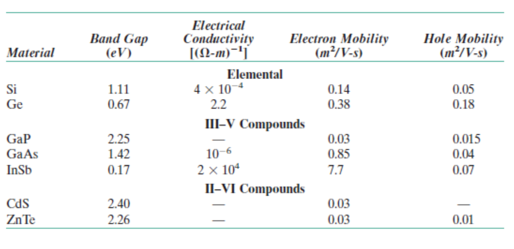
Q10 on Slides 34 and 41 asks to order semiconductors by conductivity at the same temperature and to explain the criterion; Slide 34 poses AlP, GaAs and InSb, and Slide 41 the doped pairs (Ge with As or Sb, Si with B or In). It is problem 10 of the sheet.
§ 12 Extrinsic semiconductors: type n and type p [Session 13 Slides 35-39]
12.1 Doping [Session 13 Slide 35]
Extrinsic semiconductors are the most usual type: the dopants add charge carriers, raise the conductivity and make it possible to manufacture devices with special properties (transistors and others). Two types, depending on the doping atoms:
- Type n: dopant with more valence electrons than the host.
- Type p: dopant with fewer valence electrons than the host.
12.2 Type n [Session 13 Slide 36]
The impurity atoms have more valence electrons than the atoms of the network, so they behave as electron donors (group VA: P, As, Sb; the periodic-table fragment of Slide 35 also lists N). In silicon ($4$ valence electrons) a phosphorus atom ($5$ valence electrons) uses four of them in the covalent bonds and has one excess electron, loosely bound to it. This electron needs only a small energy to jump into the conduction band. In band language the donor atoms create a donor level $E_d$ inside the gap, very close to the conduction band, so the excitation energy is $\Delta E = E_c - E_d$, small compared with $E_g$. The distance from the donor level to the conduction band determines $n_e$. The electrons in the conduction band are the majority carriers, $n_e \gg n_H$, and
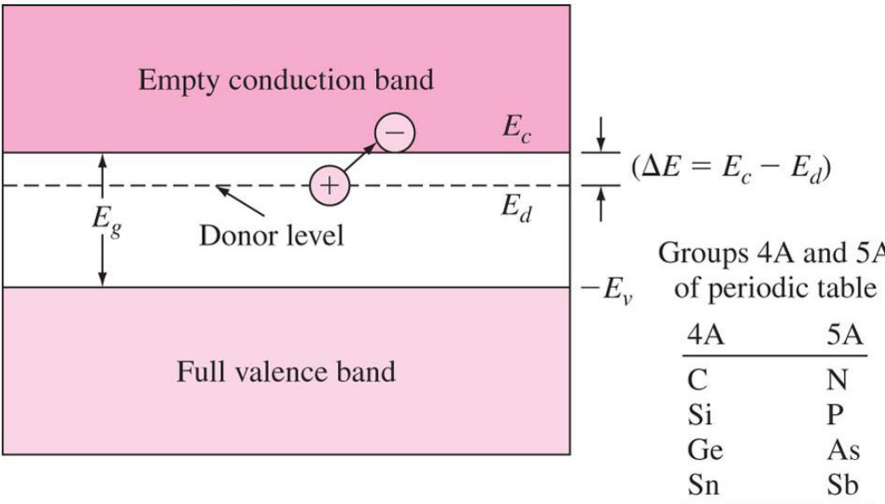
12.3 Type p [Session 13 Slide 37]
The impurity atoms have fewer valence electrons than the atoms of the network, so they behave as acceptors (B, Al, Ga and In of group IIIA; in silicon, boron has $3$ valence electrons). There is a bond with a missing electron: an excess of holes. The acceptor creates an acceptor level $E_a$ in the gap, just above the top of the valence band, so a small energy $\Delta E = E_a - E_v$ lifts an electron from the valence band into the acceptor level, leaving a hole in the valence band. The holes moving through the valence band are the majority carriers, $p \gg n$, and
Slide 37 writes "B, Al, Ga (group VA)", but the table printed on the same slide places B, Al, Ga and In in group 3A (IIIA); group VA is the one of the donors. The acceptors are IIIA.
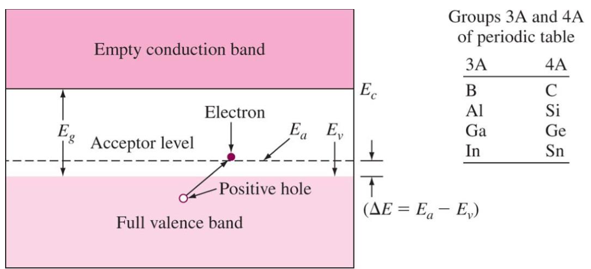
12.4 Excitation and majority and minority carriers [Session 13 Slide 38]
In a donor semiconductor the excitation lifts an electron from the donor state to the conduction band, generating a free electron. In an acceptor semiconductor the excitation lifts an electron from the valence band into the acceptor level, generating a hole in the valence band. The slide ends with the table of carrier names:
| Semiconductor | Majority-carrier concentration | Minority-carrier concentration |
|---|---|---|
| n-type | $n_n$ (electrons in n-type material) | $p_n$ (holes in n-type material) |
| p-type | $p_p$ (holes in p-type material) | $n_p$ (electrons in p-type material) |
12.5 Question 5 [Session 13 Slide 39]
Q5 asks whether silicon doped with antimony, germanium doped with arsenic and silicon doped with gallium (substitutional solid solutions) are n-type or p-type and whether the impurities act as donors or acceptors. The version of the sheet changes the second case to silicon doped with arsenic. It is problem 5 of the sheet, and problem 6 (phosphorus in silicon) applies $\sigma \approx n_e\lvert q_e\rvert\mu_e$.
§ 13 Extrinsic semiconductors: dopants and mobility [Session 13 Slides 40-42]
13.1 Donor and acceptor levels [Session 13 Slides 40-41]
The slide gives the donor and acceptor energy gaps (in electron volts) when silicon and germanium are doped, that is, the energy $E_c - E_d$ or $E_a - E_v$ that an electron needs, and the maximum solid solubility of each dopant:
| Dopant | Si: $E_d$ | Si: $E_a$ | Ge: $E_d$ | Ge: $E_a$ |
|---|---|---|---|---|
| P | 0.045 | 0.0120 | ||
| As | 0.049 | 0.0127 | ||
| Sb | 0.039 | 0.0096 | ||
| B | 0.045 | 0.0104 | ||
| Al | 0.057 | 0.0102 | ||
| Ga | 0.065 | 0.0108 | ||
| In | 0.160 | 0.0112 |
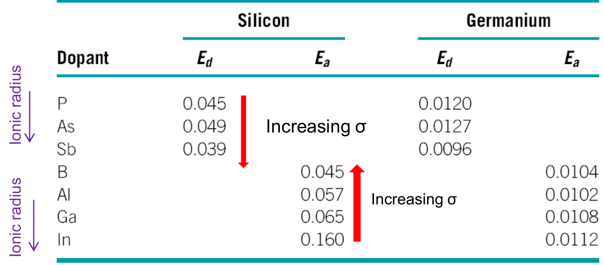
The arrows of the slide say that, as the ionic radius of the dopant increases, the conductivity increases for the donors (P, As, Sb: Si and Ge) and decreases for the acceptors (B, Al, Ga, In), in agreement with the table, where the acceptor energies grow with the size (B $<$ Al $<$ Ga $<$ In). The author's rule of thumb for comparing dopants (not printed on the slide) is to compare $E_d$ or $E_a$: the smaller the energy, the more carriers at a given temperature. The lower table of the slide gives the maximum solid solubility of the dopants, in atoms/m³:
| Host | Dopant | Group | Maximum solubility in atoms/m³ |
|---|---|---|---|
| Si | B | IIIA | $600\times10^{24}$ |
| Si | Al | IIIA | $20\times10^{24}$ |
| Si | Ga | IIIA | $40\times10^{24}$ |
| Si | P | VA | $1000\times10^{24}$ |
| Si | As | VA | $2000\times10^{24}$ |
| Si | Sb | VA | $70\times10^{24}$ |
| Ge | Al | IIIA | $400\times10^{24}$ |
| Ge | Ga | IIIA | $500\times10^{24}$ |
| Ge | In | IIIA | $4\times10^{24}$ |
| Ge | As | VA | $80\times10^{24}$ |
| Ge | Sb | VA | $10\times10^{24}$ |
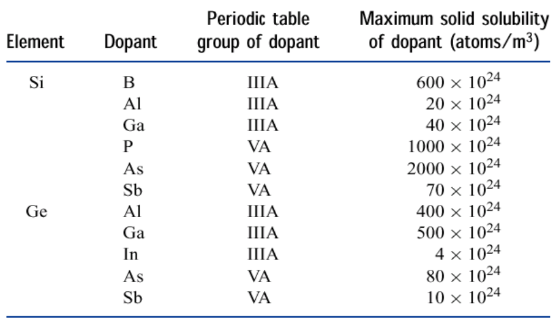
Slide 41 repeats the same two tables with the second part of Q10: germanium with 5 ppm of As or of Sb, silicon with 10 ppm of B or of In (the slide prints the germanium pair twice).
13.2 Mobility of the carriers [Session 13 Slide 42]
In extrinsic semiconductors also $\mu_e > \mu_H$ (the ratio $\mu_e/\mu_H$ is $2.81$ for Si and $2.05$ for Ge). The distortion of the crystal structure caused by the doping is negligible, so $\sigma$ is controlled by the number of charge carriers. The chart shows the room-temperature electron and hole mobilities of silicon against the dopant concentration: both are almost constant (about $0.13$ and $0.05$ m²/(V·s)) up to about $10^{21}$ m⁻³ and fall for high doping (electrons about $0.10$ m²/(V·s) at $10^{22}$ m⁻³ and below $0.01$ m²/(V·s) at $10^{25}$ m⁻³; read from the chart).
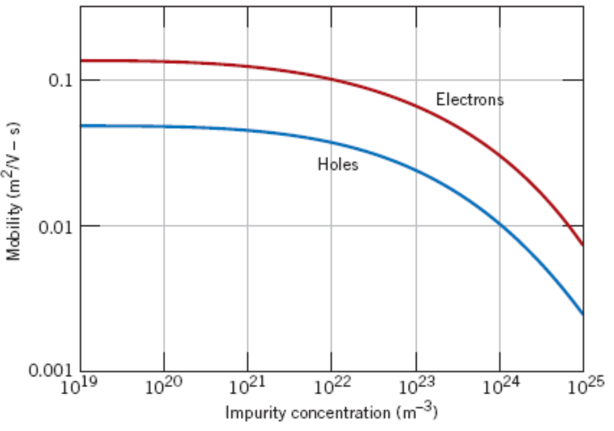
§ 14 Extrinsic semiconductors: effect of temperature [Session 13 Slides 43-44]
At low temperature the number of ionised impurities per unit volume determines $\sigma$. As $T$ increases, the number of ionised atoms increases and so does $\sigma$: this is the extrinsic range, whose slope in the $\ln\sigma$ against $1/T$ plot depends on the type of semiconductor. For the n-type and p-type the slide writes
so $\ln\sigma = \ln\sigma_0 - \dfrac{E_c-E_d}{2kT}$ for the n-type and the same with $E_a - E_v$ for the p-type: the slope of the line is $-(E_c-E_d)/2k$ (n-type) or $-(E_a-E_v)/2k$ (p-type).
Slide 43 prints $E_a - E_c$ for the p-type. The ionisation energy of an acceptor is the distance from the acceptor level to the top of the valence band, $E_a - E_v$ (Slide 37), and that is the form used here.
The chart on the right of Slide 43 labels the extrinsic slope as $-(E_c - E_d)/k$, without the factor 2 that the equations on the left of the same slide carry, $-(E_c - E_d)/2k$. The factor 2 is the one that follows from $\sigma \propto \exp[-(E_c - E_d)/2kT]$, and it is the one used on this page.
At intermediate temperature all the impurities have been ionised and $\sigma$ is almost constant: the exhaustion range for the n-type (all the donor electrons have been lost) and the saturation range for the p-type (all the atoms are ionised). At high temperature the intrinsic generation across the gap takes over, with slope $-E_g/2k$: the intrinsic range [Session 13 Slide 43]. Slide 44 summarises it: at low and moderate $T$ the material behaves as an extrinsic conductor and $\sigma$ is governed by the number of ionised atoms; at high $T$ the conductivity slightly decreases, because the number of carriers stays constant and the disordering effect of the temperature (lower mobility) becomes visible; at very high $T$ the material behaves as an intrinsic conductor.
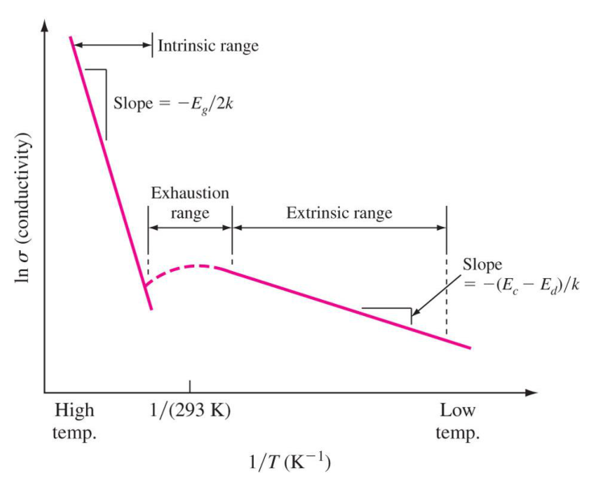
§ 15 Applications of semiconductors [Session 13 Slides 45-49]
15.1 The p-n junction [Session 13 Slide 45]
A p-n junction is a boundary or interface between two types of semiconductor material, p-type and n-type, inside a single crystal. It is the basis of the diode, the photovoltaic cell and the LED of the next sections (the slide links two videos, listed at the end of this page).
The slide draws the junction in three steps: the carriers on both sides, the depletion layer (fixed negative charge on the p side and positive on the n side, with the internal electric field) and the band diagram with the diffusion potential $V_{bi}$ between the two sides.
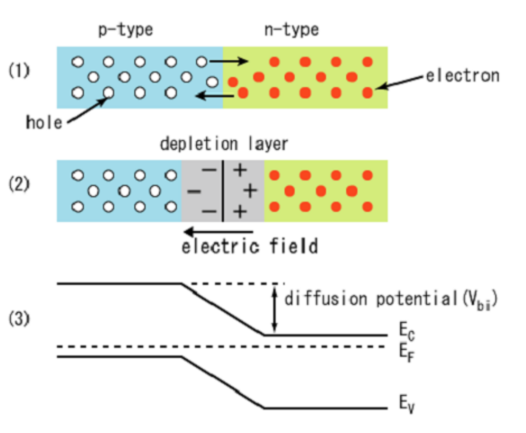
15.2 Photoconductivity and photovoltaic cells [Session 13 Slide 46]
Electrons jump from the valence to the conduction band due to thermal excitation, due to intense electric fields or due to exposure to radiation of a given wavelength. Photoconductivity is the phenomenon in which a material becomes more conductive due to the absorption of electromagnetic radiation, such as visible light, whose photon energy must be at least $E_g$. The same effect used to generate electricity gives the photovoltaic cells; solar light has $E_g \sim 1.5$ eV. The slide's absorption figure marks that silicon absorbs photons above $1.1$ eV, gallium arsenide above $1.43$ eV and aluminium gallium arsenide above $1.7$ eV, while photons of lower energy go through.
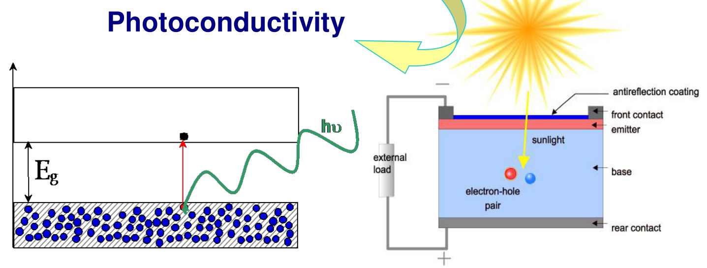
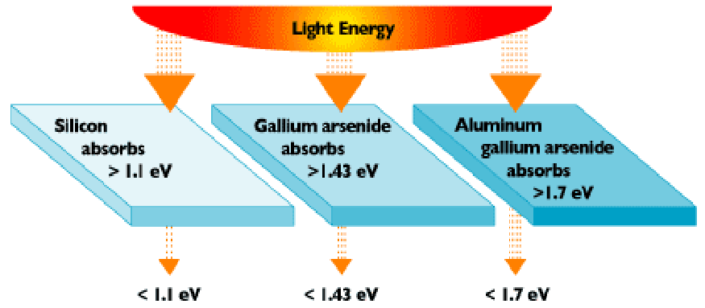
15.3 LED [Session 13 Slide 47]
A light-emitting diode is a semiconductor doped to create a p-n junction that emits monochromatic light when it is directly polarised (forward bias): electrons from the n side and holes from the p side recombine at the junction and release the energy $E_g$ as a photon. The colour depends on the distance between the valence and the conduction band, as in the slide's table (the band gap increases from top to bottom and the wavelength increases from bottom to top):
| Material | Radiation |
|---|---|
| AlGaAs | red and infra-red |
| GaN | green |
| GaP | green |
| ZnSe | blue |
| InGaN | blue |
| SiC | blue |
| Diamond | ultra-violet |
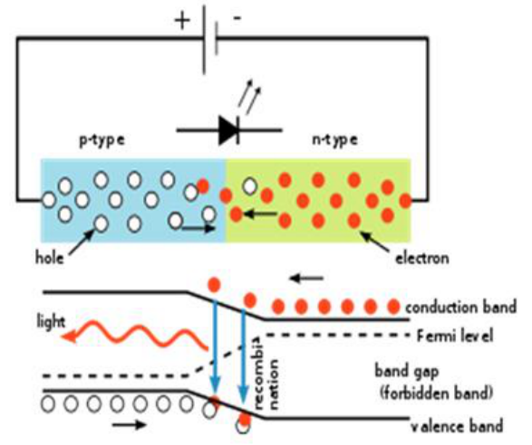
15.4 Thermistors [Session 13 Slide 48]
Thermistors are devices based on the change of the electrical conductivity of semiconductors with temperature. The chart compares aluminium, whose conductivity decreases with temperature (reducing mobility), with germanium, whose conductivity increases by several orders of magnitude between $0$ and 400 °C (increasing charge carriers).
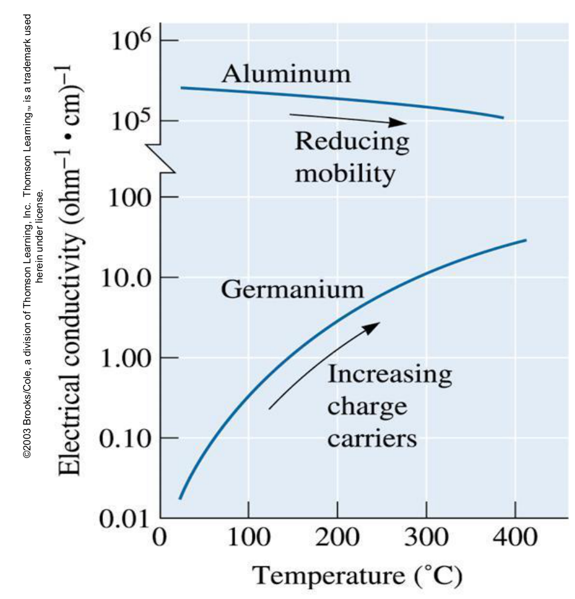
15.5 Transistors [Session 13 Slide 49]
A transistor is a semiconductor device that can be used to amplify electrical signals. The slide shows the downscaling of the transistor and of its interconnects through the generations of $180$ nm (1999), $130$ nm (2001), $90$ nm (2003), $65$ nm (2005) and $45$ nm (2007), down to prototypes of $30$ nm and $20$ nm, with micrographs and a plot of the size against the year (source: Intel).
§ 16 Insulating and dielectric materials [Session 13 Slides 51-54]
16.1 Dipoles and polarisation [Session 13 Slide 51]
An electrically insulating material (large $E_g$) that exhibits, or can be made to exhibit, a dipolar structure is a dielectric. The dipole moment of two charges $+q$ and $-q$ separated by a distance $d$ is
Without field the dipoles of the material are randomly oriented and the net polarisation is zero (unpolarised); an applied electric field polarises the material by aligning the dipoles, and opposite charges appear on the faces next to the plates.
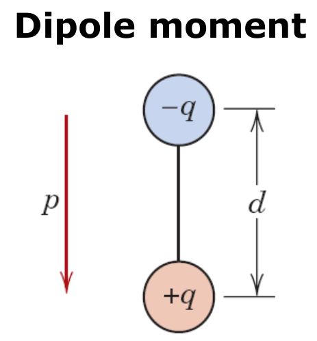
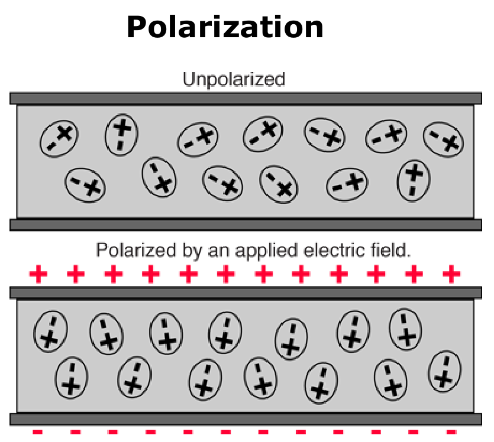
16.2 Insulators, dielectrics and capacitance [Session 13 Slide 52]
Highly resistive materials have two applications, depending on their response to the electric field:
- Insulators insulate conductors from each other and from a metal mass: high $E_g$.
- Dielectric materials are placed between the plates of a capacitor and increase its capacitance: intense dipoles that easily line up with the electric field.
The capacitance of two parallel plates of area $A$ separated by a distance $d$ is
$\varepsilon_0 = 8.85\times10^{-12}$ F/m is the permittivity of vacuum, $\varepsilon_r$ the dielectric constant (relative permittivity) and $C_0$ the capacitance with vacuum between the plates. The dielectric polarises, so the net charge at its surfaces ($-Q'$ and $+Q'$) lets the plates store more charge, $Q_0 + Q'$, for the same voltage.
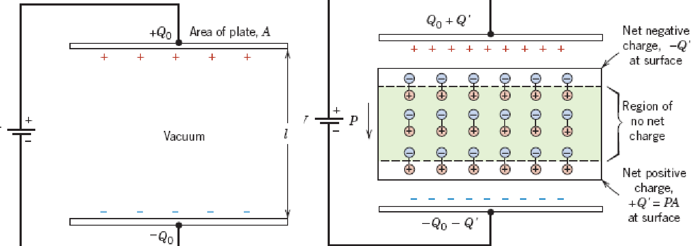
16.3 Loss factor and dielectric strength [Session 13 Slide 53]
Capacitors are normally used in alternating-current circuits, so the dipoles must realign fast when the field changes. The loss factor $\tan\delta$ is the amount of electrical energy lost, as heat, by a capacitor in an alternating circuit, due to the friction among dipoles when they try to reorient. It increases with moisture, temperature and the frequency of the current, and these also lower the resistivity.
The dielectric strength is the maximum electric field that the dielectric can sustain without electrical breakdown:
$U_{break}$ is the breakdown voltage and $d$ the separation between the conductors (in mm on the slide).
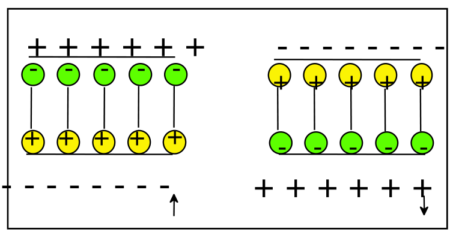
16.4 What an insulator should have [Session 13 Slide 54]
| Requirement | Why |
|---|---|
| High resistivity $\rho$ | to avoid current leaks |
| High dielectric strength $E_{break}$ | to avoid breakdowns of the insulation |
| Small loss factor $\tan\delta$ | (no reason printed; see the loss factor above: energy lost as heat) |
| Low permittivity $\varepsilon$ | to avoid polarisation |
The slide closes with a table of typical electrical insulators ("..." marks a value the slide does not give):
| Material | Volume resistivity in $\Omega\cdot$m | Dielectric strength in V/mil | Dielectric strength in kV/mm | Dielectric constant $K$ at 60 Hz | $K$ at $10^6$ Hz | Loss factor at 60 Hz | Loss factor at $10^6$ Hz |
|---|---|---|---|---|---|---|---|
| Electrical porcelain insulators | $10^{11}$ to $10^{13}$ | 55-300 | 2-12 | 6 | ... | 0.06 | ... |
| Steatite insulators | $>10^{12}$ | 145-280 | 6-11 | 6 | 6 | 0.008-0.090 | 0.007-0.025 |
| Fosterite insulators | $>10^{12}$ | 250 | 9.8 | ... | 6 | ... | 0.001-0.002 |
| Alumina insulators | $>10^{12}$ | 250 | 9.8 | ... | 9 | ... | 0.0008-0.009 |
| Soda-lime glass | ... | ... | ... | ... | 7.2 | ... | 0.009 |
| Fused silica | ... | 8 | ... | ... | 3.8 | ... | 0.00004 |
§ 17 Ferroelectric materials [Session 13 Slides 55-57]
17.1 Spontaneous polarisation [Session 13 Slide 55]
Ferroelectric materials have permanent dipoles that can remain aligned in the absence of an electric field: they show spontaneous polarisation with no external field. If a ferroelectric is slowly cooled to a temperature below the critical temperature in the presence of a strong electric field, the anions are displaced towards the positive side of the field and the cations towards the negative side, which produces a permanent electric dipole (the slide draws a perovskite cell with $\text{Ti}^{4+}$ or $\text{Zr}^{4+}$ at the centre, $\text{O}^{2-}$ at the faces and $\text{Pb}^{2+}$ at the corners, non-polarised and polarised, for $T < T_{Curie}$).
17.2 Hysteresis and Curie temperature [Session 13 Slide 56]
The electric-field hysteresis cycles are similar to those of ferromagnetic materials with the magnetic field: the polarisation $P$ (or $D$) against the field $E$ shows a saturation polarisation, a remanent polarisation $P_r$ that stays when the field is removed, a non-remanent part, and a coercive field $E_c$ that must be applied in the opposite direction to bring $P$ to zero. The area under the hysteresis curve is related to the energy required to change the orientation of the dipoles.
The Curie temperature $T_c$ is the temperature above which the material loses its ferroelectric properties and becomes a plain dielectric; typically $-200\,{}^{\circ}\text{C} < T_c < 640\,{}^{\circ}\text{C}$. Example: BaTiO₃ has $T_c = 120\,{}^{\circ}\text{C}$. Below 120 °C the structure is tetragonal; above 120 °C the crystal structure of BaTiO₃ is cubic and the permanent dipoles disappear.
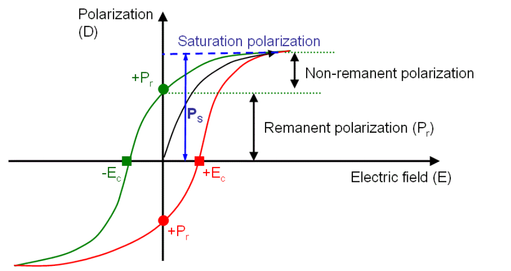
The slide gives the dimensions of the cell, 0.403 nm for the vertical edge and 0.398 nm for the horizontal ones, and the displacements of the ions in the tetragonal phase (0.006 nm and 0.009 nm).
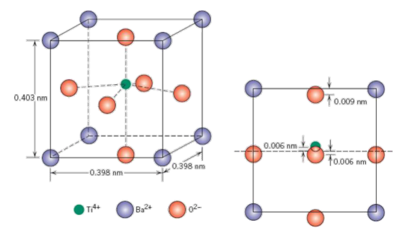
17.3 Dielectric constants [Session 13 Slide 57]
| Material | Class | $\varepsilon_r$ |
|---|---|---|
| BaTiO₃ | Ferroelectric | 4000 |
| KNbO₃ | Ferroelectric | 700 |
| Rochelle salt | Ferroelectric | 170 |
| TiO₂ | Dielectric | 100 to 50 |
| Al₂O₃ | Dielectric | 10 |
| Porcelain | Dielectric | 6.0 |
| PET | Dielectric | 3.2 |
| PVC | Dielectric | 3.5 |
| Polyethylene | Dielectric | 2.3 |
| Air | Dielectric | 1.0 |
$\varepsilon_r(\text{ferroelectric}) \gg \varepsilon_r(\text{common dielectric})$, so ferroelectrics give small and very efficient capacitors (for example, for computer memories). Since $C = \varepsilon_r C_0$, a capacitor with BaTiO₃ stores about $4000$ times the charge of the same capacitor with vacuum.
§ 18 Piezoelectric materials [Session 13 Slides 58-60]
Piezoelectric materials are ferroelectric materials that can be polarised when an external mechanical stress is applied. They occur in ceramics whose crystal structure has a low degree of symmetry [Session 13 Slide 58]. Two effects:
| Direct piezoelectric effect | Reverse piezoelectric effect (electrostriction) |
|---|---|
| External stress | External electric field |
| $\downarrow$ crystalline structure deformation | $\downarrow$ dipole alteration |
| $\downarrow$ dipole alteration | $\downarrow$ crystalline structure deformation |
| Electric field (voltage) generation | Dimensional change of the material |
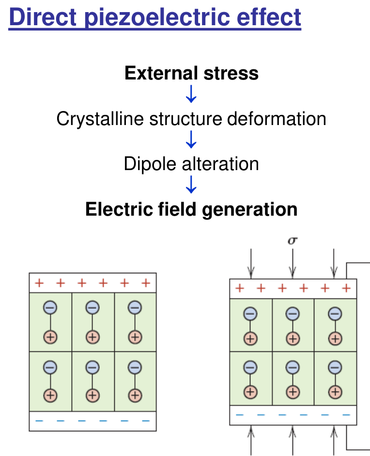
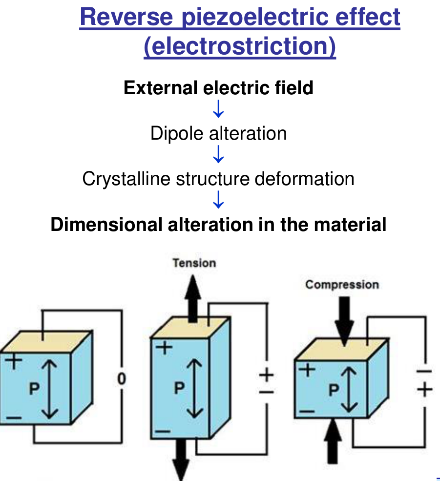
They are used to transform electrical energy into mechanical energy and vice versa [Session 13 Slide 59], for example in lighters (a mechanical shock converted into a spark), transducers in speakers, inkjet printers (a piezoelectric actuator pushes the ink droplet out of the nozzle with a pulsed voltage), and microphones and hydrophones [Session 13 Slide 60].
§ 19 Collected formulas of the topic
Everything below is taken from the sections above; it is a quick reference, not new content.
| Quantity | Formula | Where |
|---|---|---|
| Resistance of a bar | $R = \rho\,l/A$ (derived from $J = \sigma E$) | Section 4 |
| Drift velocity and mobility | $v_d = \mu E$, $\ \mu = \tau\lvert q_e\rvert/m_e$ | Section 4 |
| Conductivity of a conductor | $\sigma = n\lvert q_e\rvert\mu = 1/\rho$ | Section 4 |
| Matthiessen's rule | $\rho_{total} = \rho_T + \rho_r = \rho_T + \rho_i + \rho_d$ | Sections 5, 6 |
| Thermal resistivity of a metal | $\rho_T = \rho_0(1+\alpha_T\Delta T)$, $\rho_0$ at 0 °C | Section 5 |
| Intrinsic semiconductor | $\sigma = n\lvert q_e\rvert(\mu_e+\mu_H)$, $\ \sigma = \sigma_0 e^{-E_g/2kT}$ | Section 10 |
| Extrinsic n-type, p-type | $\sigma \approx n_e\lvert q_e\rvert\mu_e$, $\ \sigma \cong p\lvert q_e\rvert\mu_H$ | Section 12 |
| Extrinsic range | $\sigma = \sigma_0 e^{-(E_c-E_d)/2kT}$ or $e^{-(E_a-E_v)/2kT}$ | Section 14 |
| Dipole moment | $p = q\,d$ | Section 16 |
| Capacitance with dielectric | $C = \varepsilon_r\varepsilon_0 A/d = \varepsilon_r C_0$ | Section 16 |
| Dielectric strength | $E_{break} = U_{break}/d$ | Section 16 |
Videos linked in the slides
These are references printed on the slides, not content of the portal:
- Session 13, Slide 45 (p-n junction): https://www.youtube.com/watch?v=btOIDQeMrMg
- Session 13, Slide 45 (p-n junction): https://www.youtube.com/watch?v=ar7xDMR4P_U